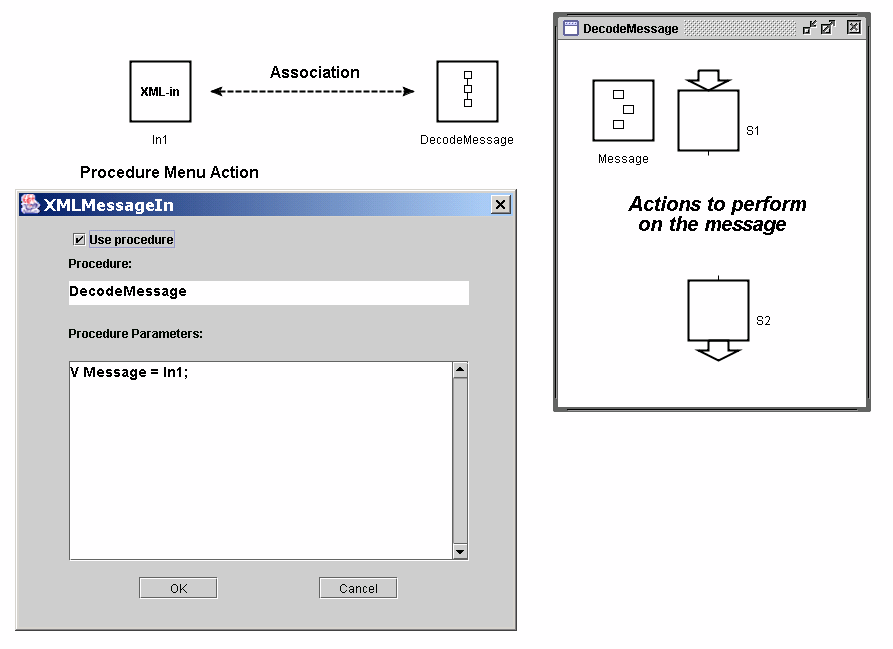

The reception of an XML Message by an XML Message In object can be detected in two different ways:
Using an event transition expression
The event expression /In1 is true whenever a new message is received by the XML Message In object named In1. The main advantage with is approach is that it is fast and simple. The disadvantage is that it only works if the transition is enabled. If this is not the case there is a risk that the message is lost due to overwriting by a new message. Also, the approach currently does not work for XML Message In objects that are contained within procedures.
Using a procedure.
It is possible to associate a procedure with an XML Message In object. Whenever a message is received a new call to the procedure is spawned (similar to a process step). The entire contents of the message can be passed in as a call-by-value parameter to the procedure. The advantage of this approach is that no messages may be lost. The disadvantage is that the spawning of a procedure is quite time consuming.
An example of how the arrival of a message is detected using an event expression is shown below.
An example of how the arrival of a message is detected using a procedure is shown below:

In the Procedure Menu action dialog the user indicates which procedure that should be associated with the XML Message In object. The entire object is passed in to the procedure invocation (V Message = In1;) Here it is important that the object at the left hand side in the assignment is a workspace object and not an XML Message In object.